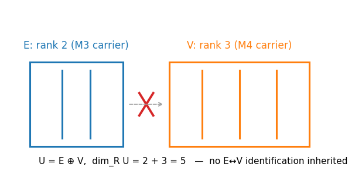
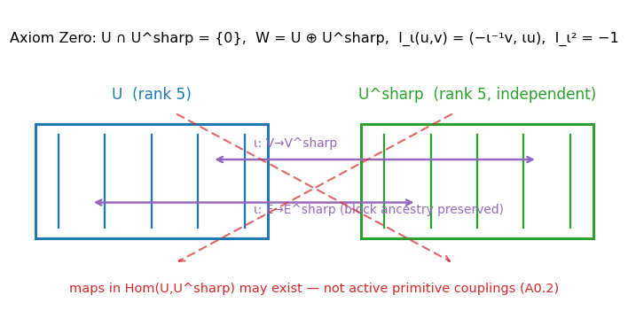
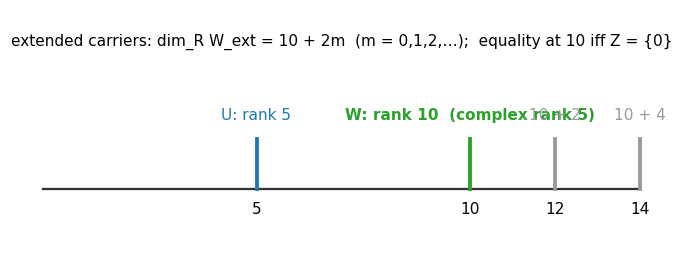
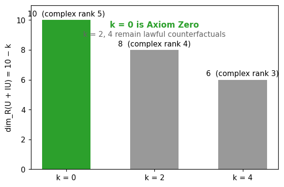
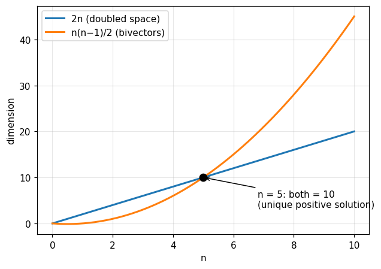
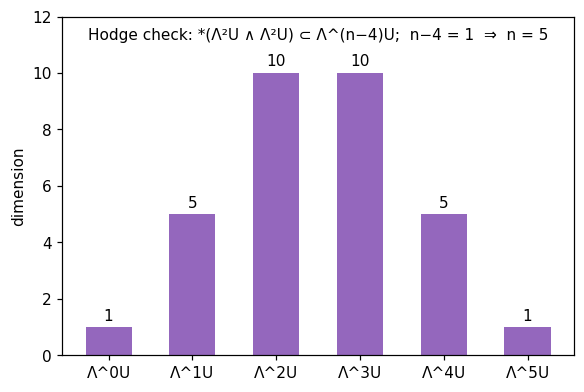

A restructured rewrite of Book 5 of R Theory — Volume I. Pictures and intuition first; the formal audit second. This book is the series' first R-specific mathematical axiom, and it is very short — about ninety lines. What follows is honest about that: the axiom is an assumption, not a proved result. Status key: A assumption or axiom, P checked proof, N completed numerical check, S standard imported theorem, M manuscript assertion, D definition.
Contents. I. See it first · II. Then earn it · III. Certification · IV. Close the book
Six pictures. The first five draw what the book constructs; the last draws what the book's dimension identities check. The graphs below are live Desmos calculators (drag to pan, scroll to zoom); if Desmos cannot load, a static rendering appears instead. Every caption carries the scope of what is shown.






The formal audit, section by section, condensed. Notation: E = retained M3 real rank-2 carrier, V = independent M4 real rank-3 carrier, U = E ⊕ V, W = U ⊕ U♯, ι: U → U♯ the declared pairing.
E and V are inherited from the frozen M0–M4 spine with no preferred identification E→V or V→E M — a fact about the inheritance, declared. U = E ⊕ V is introduced by definition D; dimℝU = 2 + 3 = 5 follows by elementary rank addition P. This five is bookkeeping rank of the neutral real-form carrier; the manuscript explicitly disavows reading it as physical spacetime dimensionality M.
A0.1. An independent isomorphic partner carrier U♯ is introduced together with a declared block-compatible linear isomorphism ι: U → U♯; U ∩ U♯ = {0}; W = U ⊕ U♯; the pairing preserves the earned block ancestry, ι(E) = E♯, ι(V) = V♯ A. A0.2. Primitive admissible symmetry or dynamical operators preserve the two summands separately and lift through the declared pairing as A ⊕ ιAι−1; mathematical off-diagonal maps in Hom(U,U♯) and Hom(U♯,U) may exist but are not active primitive couplings; any later U↔U♯ coupling is additional structure, not inherited A. The ♯ notation keeps the independent partner distinct from the internal M3 operator J; the pairing ι is pairing data, not a collapse of U and U♯ into one real subspace D. This is the first R-specific mathematical axiom in the revised dependency chain M. It imports no Standard Model, Spin(10), gauge theory, quantum probability, dynamics, or empirical calibration M.
Since U♯ ≅ U and the sum is direct, dimℝW = dimℝU + dimℝU♯ = 5 + 5 = 10 P. With the declared pairing ι, define Iι(u,v) = (−ι−1v, ιu); then Iι² = −1 by direct block computation P, so W has complex rank five. The minimal doubled completion is therefore real rank ten and complex rank five. The complex structure is canonical relative to the declared pairing ι — not determined by the bare statement U♯ ≅ U alone P. Corollary 5.3.1 (minimality, not ambient uniqueness) P: for Wext = W0 ⊕ Z with an additional independent sector Z, dimℝWext ≥ 10 with equality exactly when Z = {0}; if the complex structure must extend to all of Z, Z is real-even-dimensional, so dimℝWext = 10 + 2m for m = 0, 1, 2, … . Ten is the smallest forced rank — not a proof that every future realization has exactly ten real dimensions. Added sectors re-enter through the extension ledger M.
Theorem 5.4.1 (even-overlap alternatives) P: with k = dimℝ(U ∩ IU), I-invariance forces k even (S standard), and odd dim U = 5 forces k ≠ 5, so k ∈ {0, 2, 4}; then dimℝ(U + IU) = 10 − k gives ranks 10, 8, 6 with complex ranks 5, 4, 3. k = 0 is Axiom Zero; k = 2, 4 are lawful counterfactuals excluded only by the adopted axiom M. The supporting consistency checks are exact identities, verified: 2n = n(n−1)/2 has unique positive-integer solution n = 5 (value 10) N; exterior-algebra dims of a five-space are (1, 5, 10, 10, 5, 1) N; the Hodge one-step condition n − 4 = 1 gives n = 5 N. They corroborate but do not derive Axiom Zero and are not premises of Theorem 5.3 — the manuscript labels them nonfoundational, and the audit keeps that label M.
M5 is mathematical carrier structure, not a statement of physical spacetime dimensionality M. The previously studied 6D and 8D overlap completions remain lawful mathematical counterfactuals; they are excluded from M5 because they violate the adopted direct-independence condition, not because they are impossible mathematics M. Foundational cross-bivector or SO(5)-type mixing is not inherited at M5 — such mixing can be studied later only as explicitly added structure M.
Standard Model content, Spin(10), SU(5), E6/E8, generation counting, CKM structure, string dimensionality, and cosmological coincidences may later test or contextualize the decadic carrier. None may be used retroactively to justify Axiom Zero M. This firewall is a methodological declaration of the manuscript — a rule about how the argument may be read, not a mathematical theorem. The regular-simplex 10→11 common-mode construction, the C³⊕C²→C⁵ comparison, the 16+16 half-spin structure, and the bivector/Hodge coincidences are downstream corollaries or comparisons only M.
U = E ⊕ V with dimℝU = 5, with no inherited E↔V identification D/M; Axiom Zero (A0.1, A0.2): independent partner U♯, declared block-compatible pairing ι, direct sum W = U ⊕ U♯, primitive diagonal noncoupling A; dimℝW = 10 and complex rank 5, with Iι(u,v) = (−ι−1v, ιu), Iι² = −1, canonical relative to the declared pairing P; minimality corollary: extended carriers have dim 10 + 2m, equality at ten iff no added sector P; even-overlap enumeration k ∈ {0,2,4} → ranks 10, 8, 6 (complex 5, 4, 3) P; exact dimension identities 2n = n(n−1)/2 at n = 5, exterior dims (1,5,10,10,5,1), Hodge n − 4 = 1 → n = 5 N; the anti-circularity firewall and downstream-only status of the 10→11, C³⊕C²→C⁵, and 16+16 comparisons M.
Axiom Zero itself — the independence, the pairing data, and the primitive noncoupling are granted, not proved A; no physical spacetime dimensionality of any kind; no dynamics, no quantum probability, no Standard Model content (all fenced out by 5.6); no 10→11 common-mode construction as a theorem of this book (downstream comparison only M); no cross-bivector or SO(5)-type mixing at M5; no claim that ten is the unique admissible carrier rank for all future realizations — Corollary 5.3.1 bounds this explicitly.
Counts. New axioms: 1 (Axiom Zero, A0.1–A0.2). External imports: 0. Projection contracts: 0. Physical claims: 0. The five is bookkeeping; the ten is conditional.
Airlock. Book 6 (local symmetry and carrier mathematics) may now build on the certified decadic carrier W, but every downstream construction inherits the conditional: nothing derived from W is stronger than Axiom Zero itself. The anti-circularity firewall stays up: later physics may test or contextualize the carrier, never justify the axiom.
Rewrite status: all plotted identities were verified numerically with real assertions before drawing — rank arithmetic 2+3=5 and 5+5=10; Iι² = −I to machine precision (identity pairing and 50 random orthogonal pairings); 10+2m ladder with equality iff m=0; overlap enumeration k ∈ {0,2,4} → ranks 10, 8, 6; 2n = n(n−1)/2 unique positive root n=5; exterior dims (1,5,10,10,5,1); Hodge n−4=1 → n=5. These are completed numerical checks, not proofs; the axiom itself is not a checked result. Live Desmos rendering was verified by static ID/expression checks only, not by browser rendering.